| 日付 | 2016年5月29日（日） |
|---|---|
| メンバー | 家族（妻、長女・5歳、長男・2歳） |
| アクセス | 車 |
今週末は1年ぶりにこどもの国に遊びに行ってみる。
前回は一旦施設外に出て商店街で昼食をとったが、今回はおにぎり持参だ。
本日も開園の時間に駐車場に入れたので、開園と同時に入場する。
朝一は空いているので気持ちが良い。
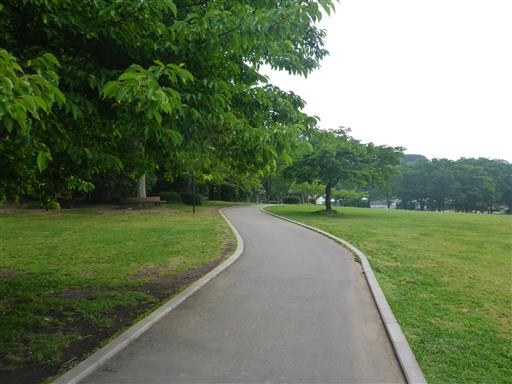
まずは前回混雑であまり滑れなかった巨大ローラー滑り台へ。
子供達は何度も走って登って3～4回滑っていた。
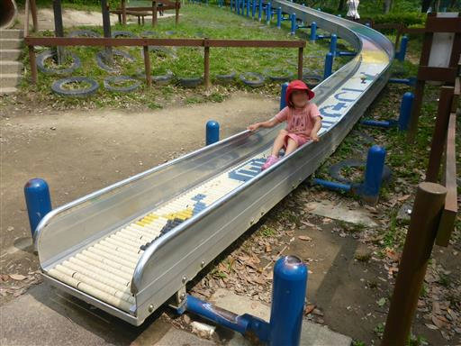
不思議な筒形の遊具。
中は傾斜が急で、案外移動が難しそうだ。
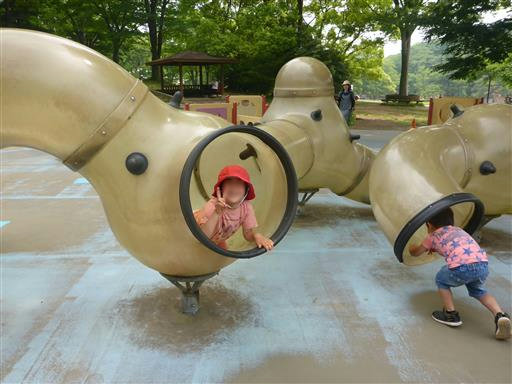
狭すぎるので大人は全く中に入れない。
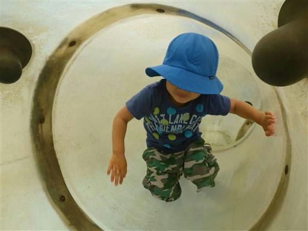
捻じれた8の字型の遊具。それなりに難しくて面白い。
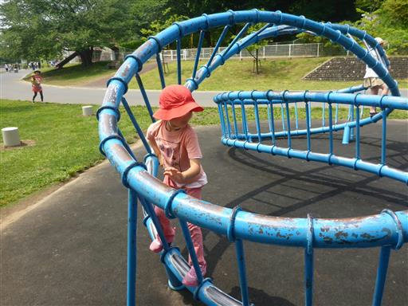
巨大迷路。あまり本格的なものではないが、
子供達は喜んで走り回っている。
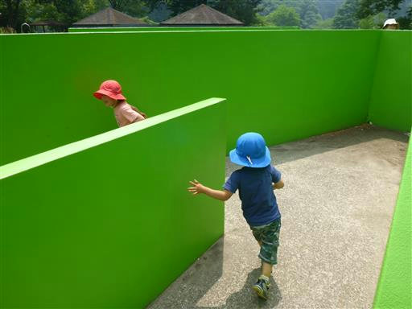
園内を走る移動用の汽車。今回も時間が合わないので乗るのはパス。

子供達は羨ましそうに汽車を見ている。
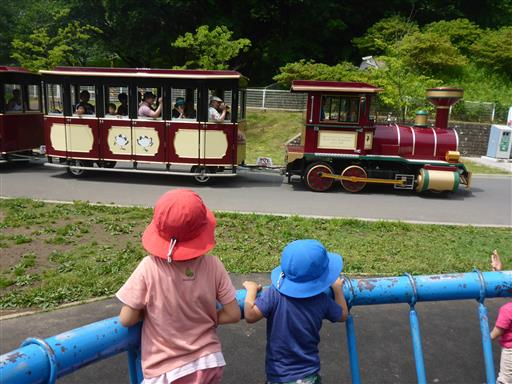
替わりにレールを走る別の汽車に乗ってみる。
コースをぐるっと一周まわってくれる。
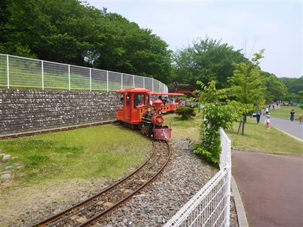
一通り遊んだら場所を移動する。
園内は広い。そしてあちらこちらに遊具が点在する。
ここは、比較的小さい子向けの遊具が並んでいる。
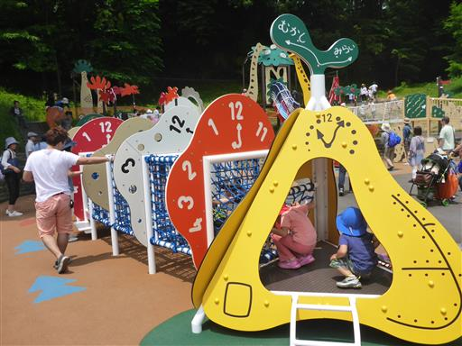
ロープウェイで遊ぶ。ここも何度も繰り返し遊んでいる。
子供の数が増えてきて、だんだん大人は遊べなくなってきた…
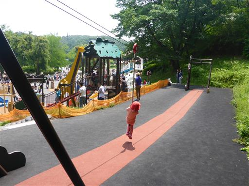
昼食を取ったら、自転車系の遊具が集まっている場所に遊びに行く。
こちらはヘリコプターの乗り物。
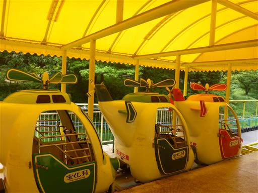
前に進めるためには自分でペダルを漕ぐ必要がある。
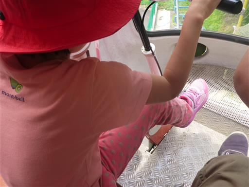
速度は遅いがそれなりの高度感がある。
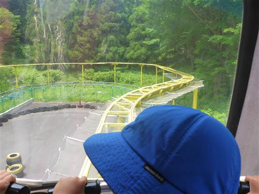
お次はジェットコースター。
坂を登る所は自動でやってくれて、あとは皆でペダルを漕ぐ。
下り坂のところは少しスピードが出る。
小さい子供でも乗れる貴重なジェットコースターだ。
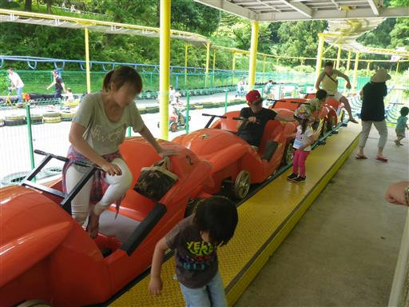
前回同様、再びトーマスの乗り物に乗る。
相変わらず息子の運転はめちゃくちゃだ。
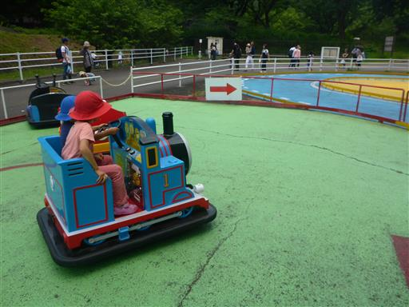
キュービックランドに移動。前回も遊んだ遊具で、面白い構造をしている。
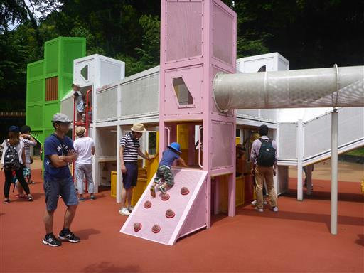
しかしここは大混雑。中が詰まっていて動かない。
今日はものすごく暑いので、中で熱中症にならないか心配だ。
休むことなく動き回って息子がだいぶ疲れてきたので、早めに引き上げることにする。
今回も子供たちが疲れるまで一杯遊びまわって、充実した様子だった。
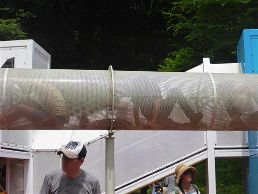